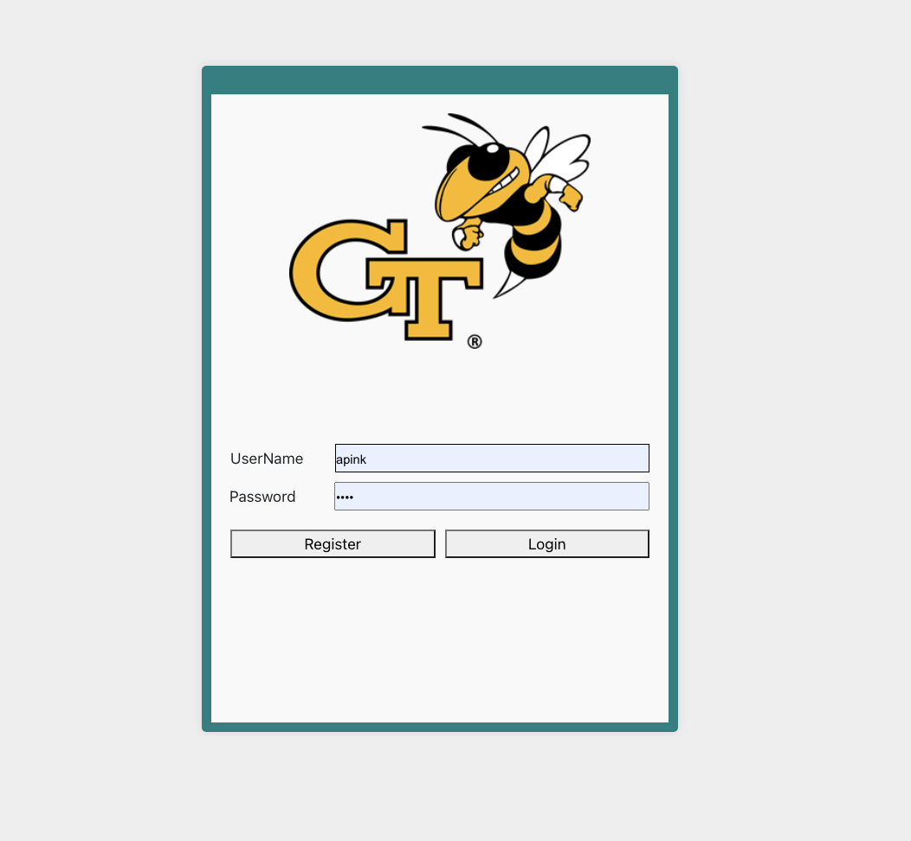
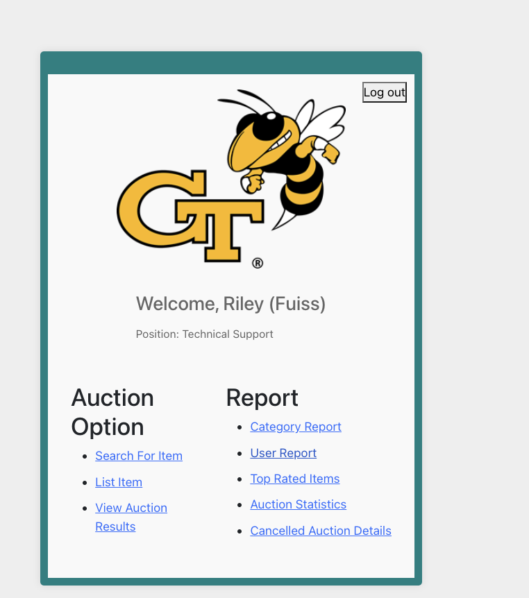
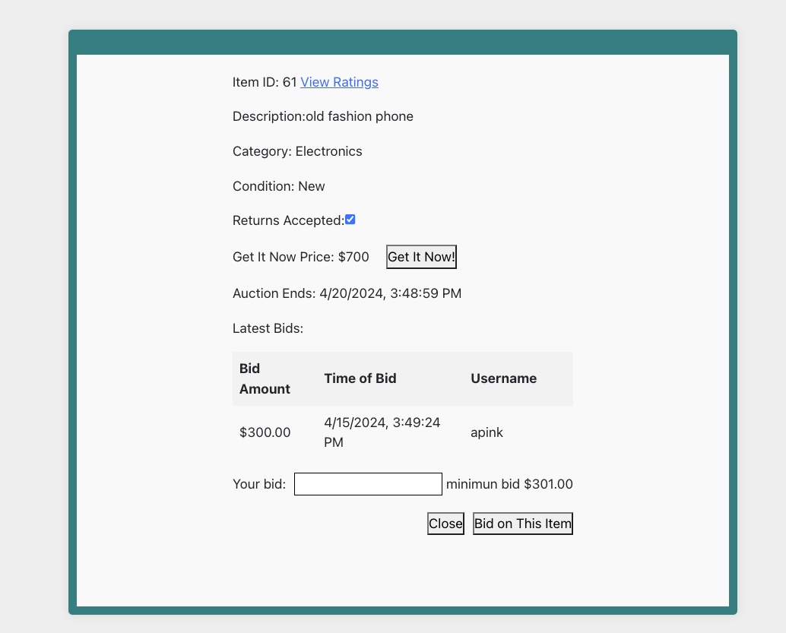

Intro
I'm now a graudate student studying Computer Science at Georgia Institute of Technology.
I worked as a full stack software engineer at a non-profit orginazation for one years to create a webpage with front end React.js, backend Node.js and Database MongoDB
I will graduate from Georgia Institute of Technology in Spring 2025, so now I'm seeking software engineer internship
and also open to full time opportunities.
Team management Webpage
Developed a team management platform that streamlines the process of receiving weekly reports from team members, significantly reducing managerial workload..
- Utilized Node.js, Express.js, and MongoDB for back-end development, while leveraging React, React Hooks, React Redux, and Axios for front-end development.
- Implemented full CRUD operations, including creating, deleting, and editing teams, as well as adding team members and managers, and searching teams by name.
- Developed the REST APIs(Retrieve Posts, Create Posts, Friend Request, Like, Comment, Report) and back-end services(Notification, Connection Policy, Verification)
to smooth user flow using Node.JS(Express.JS).
- Integrated Google Cloud Platform services, specifically using the Gmail API with OAuth 2.0 authorization,
to enable automatic weekly email updates of team members' summaries at a specified time, further improving the communication and efficiency of the team management process.
- Successfully reduced manager's workload by several hours and enhanced overall efficiency of the team management process.
Github Repo Front End
Github Repo Back End
Second-Hand Marketplace Platform
Developed a second-hand marketplace with React, Node.js, and PostgreSQL, enabling users to post items and bids.



- Enhanced the bidding page's responsiveness and fluidity by utilizing React Hooks, significantly improving the user experience during live auctions.
- Employed advanced CSS techniques, leveraging Flexbox and Grid, to deliver a visually appealing and logically structured interface, thereby elevating the overall user interface design.
- Authentication and security handling credential design a secure login.
- Designed the Entity Relationship Diagram and optimized SQL queries for performance using pgAdmin.
- Implemented responsive UIs with React Hooks and React DOM, and improved query efficiency with indexing.
Github Repo Front End
Github Repo Back End
Skills
I'm glad that I live in an era when technologies are updating and iterating very fast
so that I can keep learning new things to improve and strengthen my knowledge and skills of software development.
Programming Languages
Java, JavaScript, TypeScript, C/C++, Python, R
Back End
Node.JS, Express.JS, Spring, Spring boot,
Front End
React.JS, HTML, CSS, Bootstrap, Redux
Database
AWS DynamoDB, MySQL, MongoDB, MongoDB Atlas, PostgreSQL, Redis, SQLite, H2
Cloud Computing
AWS Elastic Beanstalk, AWS EC2, AWS Lambda, AWS Step Functions
Tools
Docker, Maven, Git, Pandas, JSON, GraphQL, Vim
Contact
Feel free to contact me via email and also check out my social networks!